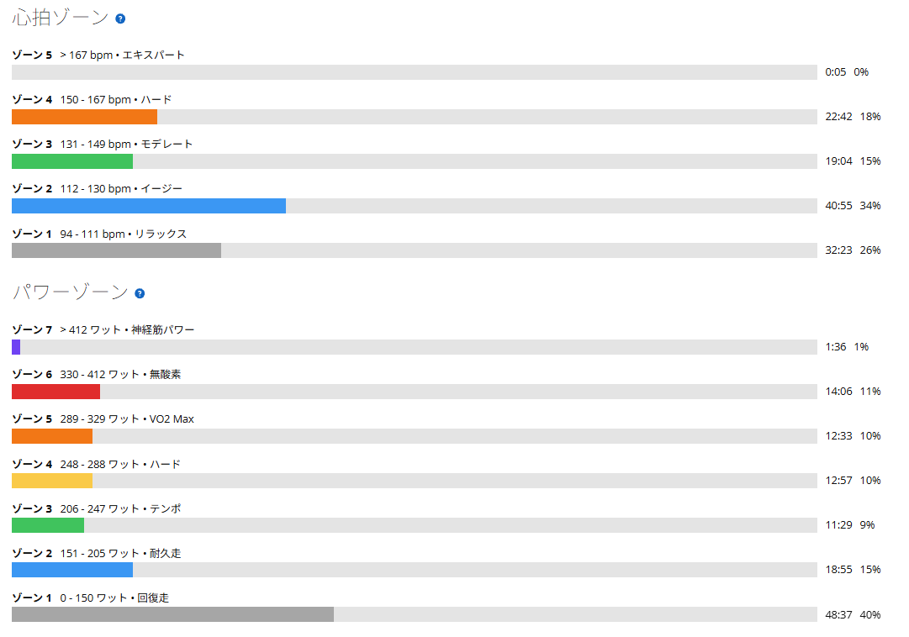

太平山反時計回りの「基準」が、だんだん見えてきた
今日も太平山反時計回りへ。同じコースを何度も走るうちに、その日の数字を見るだけでなく、「太平山はこのくらい、琴平峠はこのくらい、最後の唐沢山はこう走りたい」という自分なりの基準ができてきた。今日はそれが分かりやすく出たライドだった。

51.58km・NP247W・TSS161.5
- 全体51.58km / 2時間00分19秒 / 獲得803m / 平均気温23.5℃
- 負荷平均177W / NP247W / IF0.899 / TSS161.5
- 心拍・回転平均124bpm / 最大171bpm / 平均86rpm
- 効果有酸素TE4.0 / 運動負荷184
前日は友人2人と久しぶりのMTB。3時間半近く遊んだが、平均心拍99bpm、運動負荷21と、心肺的にはかなり低強度だった。その翌日ということもあって、今日は脚がしっかり戻っている感じがあった。

前半の短い登りは、最初から脚がよく動いた
- 名もなき峠1分57秒2 / 337W / 心拍平均146bpm・最大153bpm / 87rpm
- 下皆川街道2分05秒6 / 359W / 心拍平均145bpm・最大158bpm / 85rpm
- 登り返し54秒3 / 376W / 96rpm
名もなき峠は1分57秒で、前回の2分04秒から約8秒縮んだ。下皆川街道もしっかり踏めて、どちらも反時計回りで走った中では一番速い。登り返しは前回とほぼ同じ376W。短い登りなので、毎回大きく狙うというより、その日の流れの中で自然に通過する区間である。
太平山は7分02秒。基準の「7分前後」に収まった
- 太平山7分02秒4 / 319W / 心拍平均151bpm・最大167bpm / 92rpm
当面の目標は「太平山を7分前後で登れるようにする」。毎回タイムアタックをするという意味ではなく、7分前後をひとつの基準として、普通に再現できるようにしていきたい。最近の太平山を並べると、6分57秒・321W、7分02秒・319W、7分15秒・312W。このくらい走ってくると、タイムと出力の関係がだんだん見えてきた。
琴平峠は297W。狙いは平均300W前後
- 琴平峠14分19秒 / 297W / 心拍平均150bpm・最大163bpm / 91rpm
ここも最近かなり安定してきた。今日は297W、前回も297W、別の日には309W。なので300Wという数字は、今の自分にとってかなり現実的な基準になってきている。毎回1W単位で追うつもりはない。290W台後半から300W前後で、安定して登れることをまず目標にする。
唐沢山は5分24秒・354W。最後に出し切れた
- 唐沢山5分24秒6 / 354W / 心拍平均154bpm・最大171bpm / 89rpm
- これまでの反時計回り10月8日 5分48秒5・331W / 10月9日 6分12秒5・305W
今日の中で、一番はっきり「最後に出し切る」感覚があった区間である。前の2回から、タイムも出力も上がった。
唐沢山については、太平山や琴平峠とは少し考え方を変えたい。最初は「5倍くらい」を目安に考えていた。体重72kg前後なら、5倍は約360W。今日の354Wならかなり近い。ただ、唐沢山は倍率を追うより、「その日の最後に、約5分を全力で登る」区間にしたい。それを習慣にする。
過去の4分54秒・約400Wは、参考記録にする
唐沢山には、過去に4分54秒・約400Wで登った記録がある。数字だけ見ると、分かりやすい目標に見える。ただし、この記録はさら脚で走ったときのもの。今の太平山反時計回りでは、太平山、琴平峠などを走ったあとに、最後の唐沢山へ入る。条件がまったく同じではない。
なので4分54秒・約400Wは、あくまで参考記録にする。今後は太平山反時計回りの最後という同じ条件で記録を積み上げ、いつかそこでも5分前後、さらに高い出力まで戻ってきたら最高である。
3つの山で、見ているものが違う
- 太平山7分前後（タイムを見る）
- 琴平峠平均300W前後（持続パワーを見る）
- 唐沢山最後に約5分全力（出し切れるかを見る）
同じコースの中で、違う能力を見られるのが面白いところである。最初の頃は、今日は速かった、今日は遅かった、で終わっていた。同じコースを何度も走ると、ただの反復ではなく「自分の基準を作る」という意味が出てくる。
今はまだ最終目標を決める段階ではない。この基準を安定して再現できるようになってから、次にどこまで上げるかを考える。まずは、太平山7分、琴平300W、最後の唐沢を約5分全力。この3つを当面の基準にして走っていく。
次に見るポイント
- 太平山7分前後を、狙わなくても普通に再現できるか
- 琴平峠290W台後半〜300W前後で安定して登れるか
- 唐沢山最後の約5分全力を習慣にして、同じ条件での記録を積み上げる